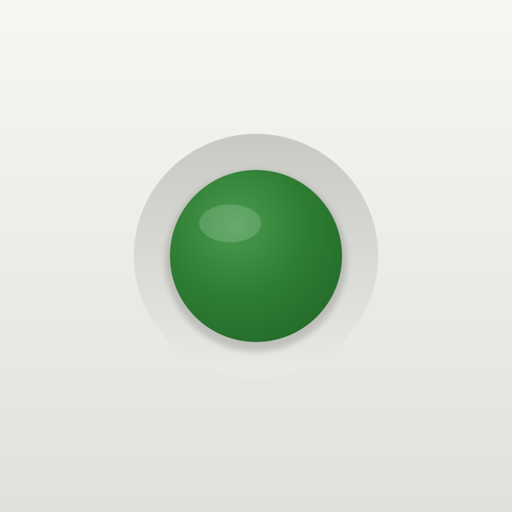
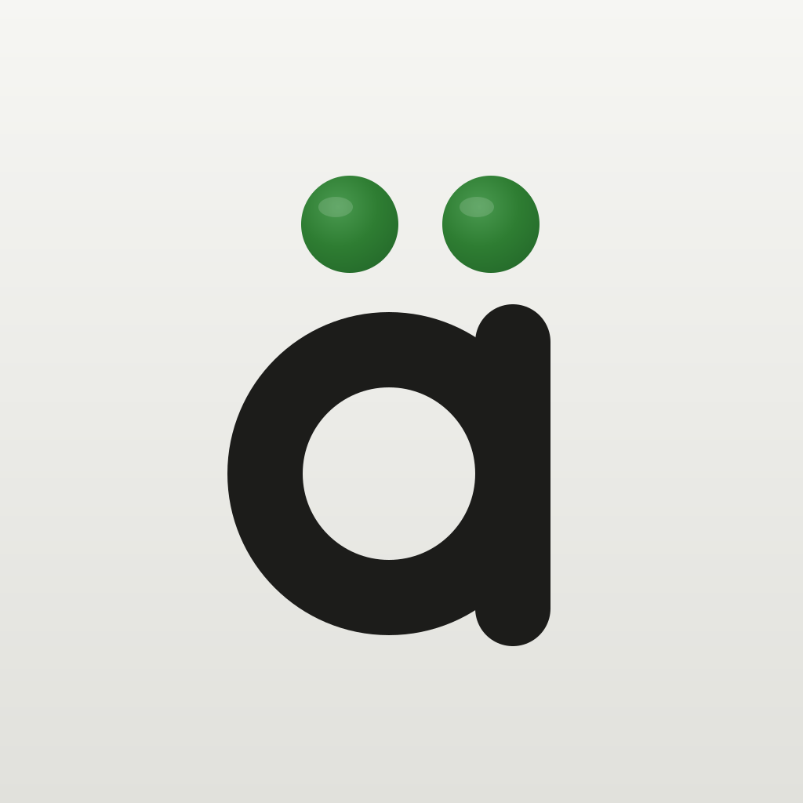
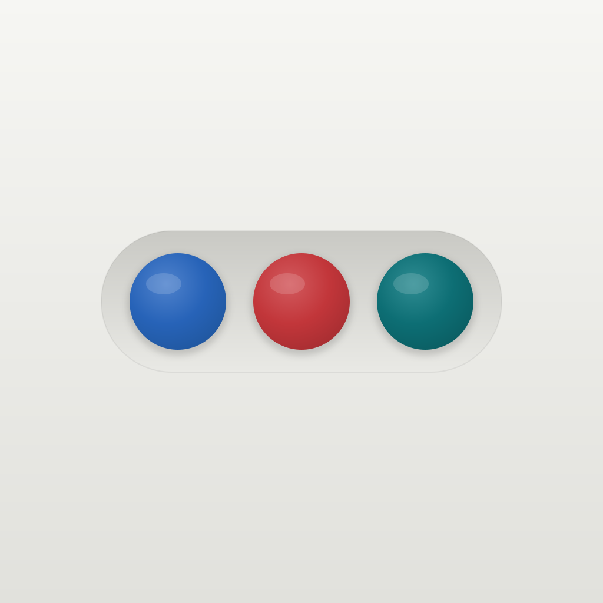
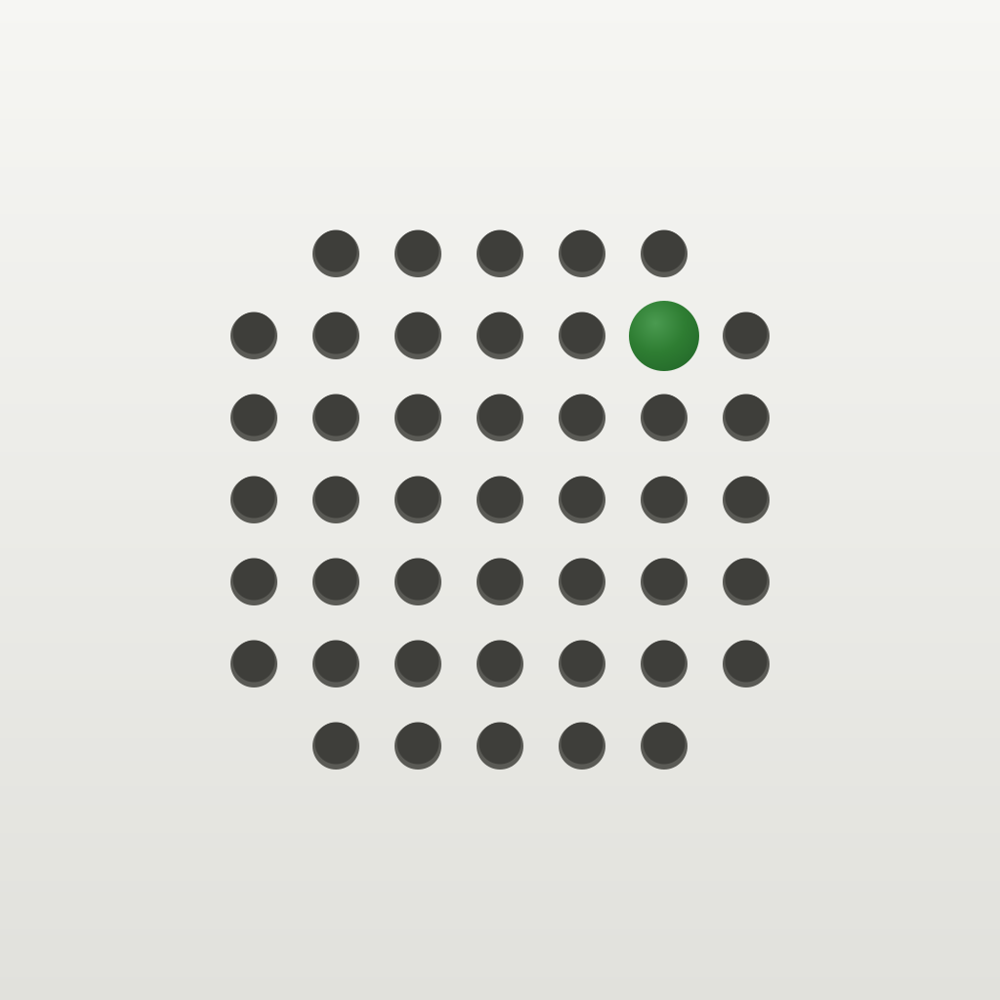
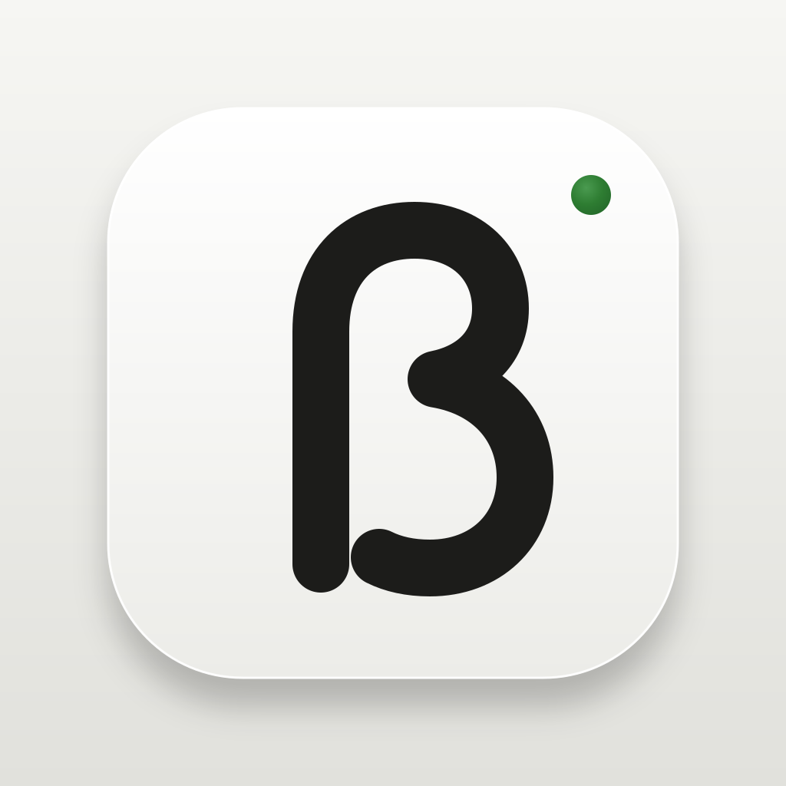

Five icons built from the locked F direction: grey housing, graphite, one green signal lamp. None uses letters of a name, so all work with whatever the app is called. Each is shown large, at real home-screen size (60 pt) on a light and a dark wallpaper, and at the two small sizes iOS also uses (Spotlight 40 pt, Settings 29 pt).
One green indicator lamp in a recessed bezel: the app's "next thing to do" signal. The quietest option and the most Braun.

A drawn "ä" whose two dots are the green lamps. Says German at a glance without spelling a word.

Three lamps in the gender colours (blue der, red die, teal das) in one recessed strip. The app's own learning aid as its mark.

A round speaker perforation, as on a Braun radio, with one hole lit green. Points to listening, the core of the routine.

One key cap carrying a drawn ß, with a small green lamp like a caps-lock light. The one letter only German has.
